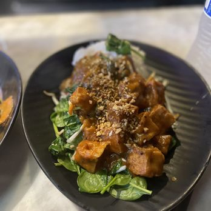
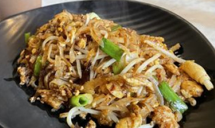
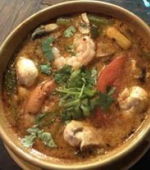

Thai Tom
Address: 4543 University Way NE, Seattle, WA 98105 / Phone: (260) 548-9548
Open Hour: Mon - Sat: 11:30 AM - 9 PM, Sun: 12 - 9 PM
Service Option: Cash-only · Doesn't accept reservations · Serves vegan dishes
Popular, cash-only Thai restaurant serving spicy wok creations in a no-frills dining room
Reviews
Ryan Nishi
Service: A, Food Quality: A
I love the food and service here! Especially the Thai salad and deep fried tofu are my favorite for starters!
Sean Yoon
Accessiblity: A+, Food Quality: A
I love this place because it is really close to the U District link station! I love the Tom yum, a soup with tasteful shrimp.
Price: B+
Service: A
Food Quality: A+
Accessibility: A+
Website: Thai Tom